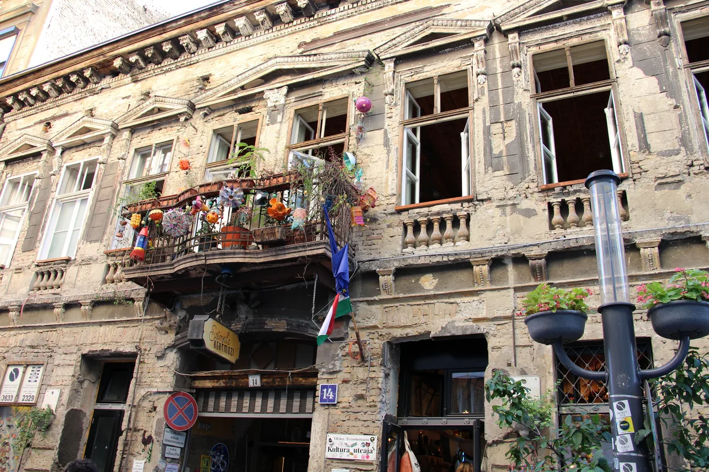
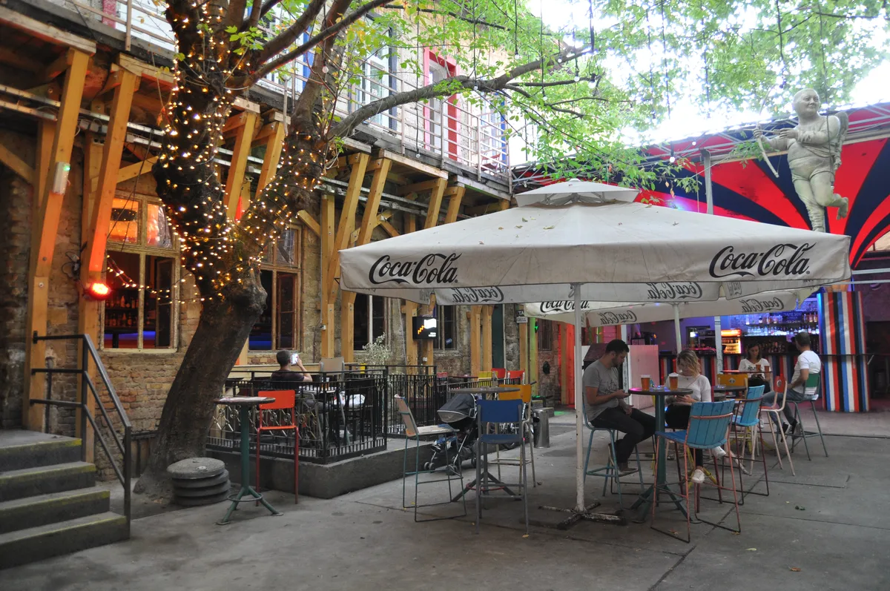
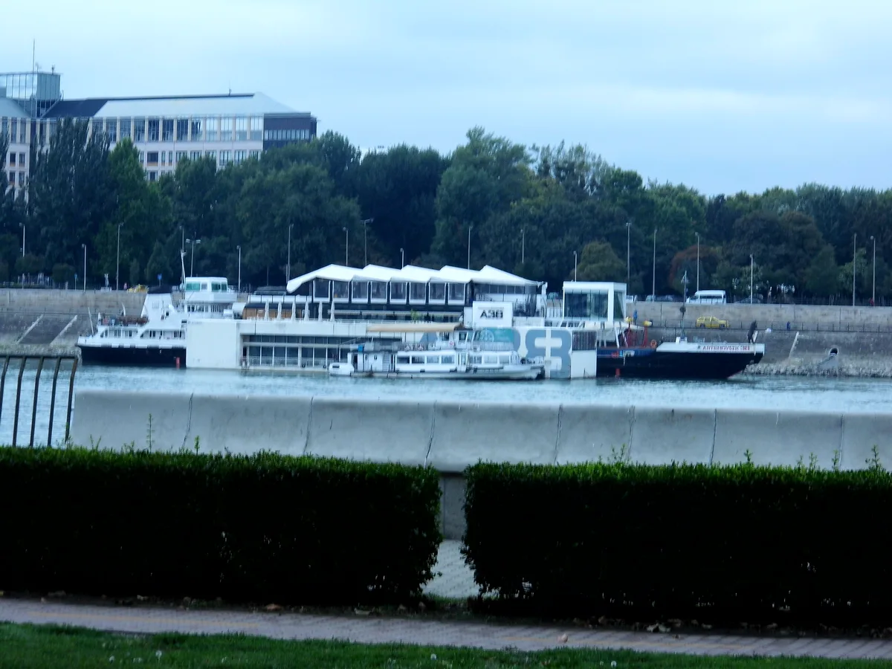
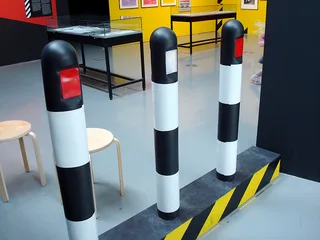

Budapest clubs
The best clubs in Budapest, from A38 to Instant-Fogas
A city better known for ruin bars than clubs, and the smaller list of rooms, a converted cargo ship among them, built for dancing rather than drinking in a courtyard.
Clubs beside the ruin bars.
Search for Budapest nightlife and what comes back first is ruin bars: shabby courtyard drinking dens built into condemned buildings, made famous by Szimpla Kert. That is a real and enormous scene, and it is mostly not a clubbing one, since most ruin bars are bars first, with a soundtrack rather than a dancefloor. This guide is about the smaller list of Budapest venues built or grown for house, techno and dancing until morning, several of which started life as ruin bars before the music took over.
From ruin bars to clubs.
Szimpla Kert opened in 2002 as a small courtyard bar and moved to its current site on Kazinczy Street in the Jewish Quarter in 2004, in a crumbling building complex that was due for demolition. It became the template for the ruin bar, romkocsma, a term for a bar built into a decaying, temporarily leased building rather than a fitted-out venue, and its success turned the surrounding District VII into Budapest's main nightlife district.

Clubs followed the same logic. Instant and Fogasház were two separate ruin bars on Akácfa Street that had each built a following of their own before combining into one address in 2017, after Instant lost its previous lease. The merged Instant-Fogas complex now runs seven connected rooms and eighteen bars behind one entrance, with genres split by room, from old-school and disco through house to bass-heavy sounds.

A38 took the same do-it-yourself instinct onto the water: a 1968 Ukrainian stone-carrying ship named Tripolie, rebuilt over a year and a half and moored permanently by Petőfi Bridge, opening on 30 April 2003 as a concert hall, restaurant and dancefloor in one hull. Corvintető, a rooftop terrace and club built into a Communist-era department store at Blaha Lujza Square, ran from 2007 until police shut it down in a 2018 drugs raid; the site is now being redeveloped as a hotel and market hall for the building's hundredth anniversary, so it belongs to the city's clubbing history rather than its present.

The best clubs in Budapest now.
| Club | Area | Music and character | Best for |
|---|---|---|---|
| A38 | Danube, by Petőfi Bridge | A converted 1968 cargo ship, open since 2003 | Live music and club nights in one hull |
| Instant-Fogas Complex | Akácfa utca, District VII | Seven rooms and eighteen bars formed from two merged ruin bars in 2017 | A whole night without changing address |
| Turbina | District VIII | Budapest's main touring room for techno and house | Boiler Room's third Budapest broadcast, 2021 |
| Toldi Klub | Bajcsy-Zsilinszky út | The lobby of an 80-year-old cinema, electronic and live music after the last screening | A club with no dress code and a cinema by day |
Best techno clubs in Budapest.
Turbina opened inside a former industrial building in District VIII and has grown into the city's main touring stop for techno, house and acid, running its sixth season by 2026. Boiler Room chose Turbina for its third Budapest broadcast, in December 2021, with the Hungarian producer Route 8 behind the decks.
Boiler Room's first visit to Budapest, in January 2017, happened at Akvárium Klub, an underground venue built into a former public aquarium beneath Erzsébet Square, in partnership with the UK label Lobster Theremin. Imre Kiss, one of the Hungarian house and techno producers who played that night, is one of the clearest records of the city's underground scene reaching an international audience for the first time.
Lärm, a black-walled, no-photography techno room built behind Fogasház in 2013 and opened in March 2014, spent most of a decade as Budapest's most purist techno address, run on the idea that a room needs nothing but music and a serious sound system. It closed its Akácfa Street home and has said it is moving to a new site near the Danube, without a confirmed reopening date at the time of writing.
Where to go out in Budapest.
Most of this guide sits within walking distance of two districts. District VII, the Jewish Quarter, holds Szimpla Kert, Instant-Fogas and the bulk of the city's ruin bars, all within a few streets of each other. District VIII, immediately south-east, holds Turbina and the former Corvintető site, and is a short walk from Toldi Klub, a club built into the lobby of the 80-year-old Toldi Cinema on Bajcsy-Zsilinszky út that runs electronic and live music after the last screening. A38 sits apart from both, moored on the Buda side of the Danube by Petőfi Bridge, reachable by tram along the river.
Budapest clubs FAQ.
Why are Budapest's venues called ruin bars?
Romkocsma, usually translated as ruin bar or ruin pub, describes a bar built into a decaying building awaiting redevelopment, furnished cheaply and often temporarily. Szimpla Kert, which opened in 2002 and moved to its current site in 2004, set the template that spread across District VII and gave the neighbourhood its identity.
What is the biggest club in Budapest?
Instant-Fogas Complex, formed in 2017 from the merger of two ruin bars, Instant and Fogasház, is the largest by any measure: seven connected rooms and eighteen bars behind one entrance on Akácfa Street.
Is Budapest good for clubbing?
Yes, though its clubbing scene is smaller than its ruin bar scene and mostly sits inside or beside it. A38, a converted cargo ship on the Danube, and Instant-Fogas are the two constants; Turbina has become the main room for touring techno and house DJs, and Boiler Room has broadcast from Budapest three times since 2017.
Is nightlife better in Prague or Budapest?
They serve different nights out. Budapest's strength is its ruin bars and the clubs that grew out of them, spread across the Jewish Quarter; Prague's strongest room, Cross Club, is a single purpose-built venue rather than a district, with a more consistently electronic booking policy.
Is Corvintető still open?
No. Police closed it in a 2018 drugs raid, and the rooftop building on Blaha Lujza tér is being redeveloped into a hotel and market hall. It is covered here as history rather than a current club.
Sources.
- Wikipedia: A38 (venue)
- Wikipedia: Szimpla Kert
- A38: History
- We Love Budapest: Instant-Fogas, the party complex expanding to eight days a week (2024)
- We Love Budapest: Authorities close Budapest's Corvin Club and Auróra (2018)
- Primate.hu: What will open where Corvintető was (2025)
- Electronic Beats: How Lärm became the underground techno club Budapest needed
- We Love Budapest: Boiler Room arrives at Turbina (2021)
- Resident Advisor: Boiler Room Budapest x Lobster Theremin at Akvárium Klub (2017)
- Boiler Room: BR Budapest x Lobster Theremin (2017)
- Set counts and catalogue details are measured from this site's own catalogue of recorded DJ sets, as of September 2026.
Continue reading
Read next.
 Rave spots~11 min read
Rave spots~11 min readBest Clubs in NYC: From the Paradise Garage to Nowadays
Nowadays, Basement, Public Records, Good Room and Elsewhere: the best clubs in NYC for house and techno now, and the history from the Loft to Output.
Read article → Rave spots~7 min read
Rave spots~7 min readBest Clubs in Tokyo: WOMB, Contact and the Ban on Dancing
WOMB, Contact, Vent and Circus Tokyo: the best clubs in Tokyo for house, techno and bass music, and the 68-year law against dancing that shaped them.
Read article → Rave spots~6 min read
Rave spots~6 min readBest Clubs in Prague: Cross Club, Karlovy Lázně and Ankali
Cross Club's salvaged machinery, Karlovy Lázně's five floors and Ankali's techno nights: the best clubs in Prague, mainstream and underground.
Read article →
Rave spots~6 min readBest Clubs in Manchester: From the Haçienda to the Warehouse Project
The Haçienda closed in 1997, but its warehouse-first DIY streak still shapes the city: the best clubs in Manchester now, and the Warehouse Project's rise since.
Read article →